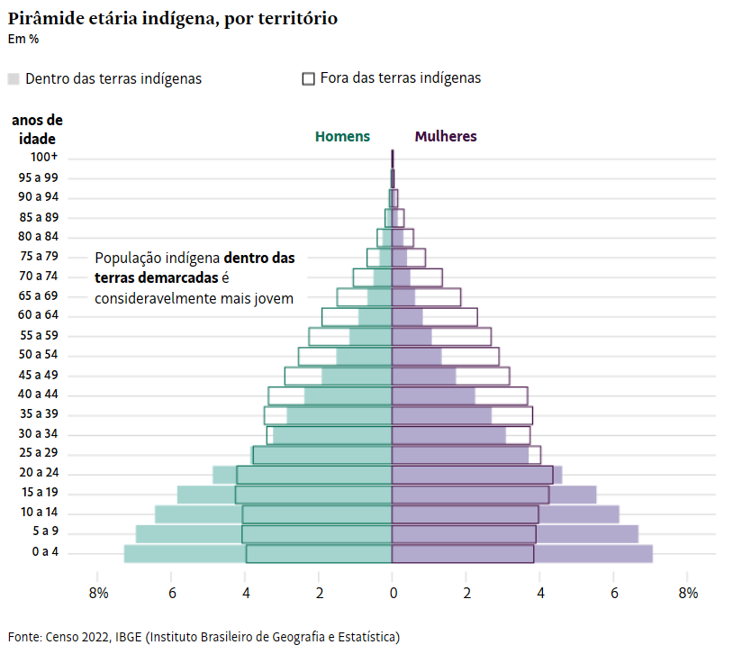

library(sidrar) #baixar dados IBGE
library(janitor) #limpeza dos dados
library(dplyr) #manipulação dos dados
library(stringr) #trabalhar com strings/texto
# library(tidyr) #tratamento dos dados
library(ggplot2) #gráficosDecifrando gráficos #2
tutorial
dataviz
ggplot2
Do Jornal para o R

Como isso foi feito?
Todo dia vemos gráficos nos jornais, mas nem sempre sabemos como eles foram feitos. De onde vieram os dados? Como foram tratados? E será que dá para recriá-los usando o R?
Nesta série, pegamos gráficos publicados nos principais jornais e recriamos do zero usando R, tidyverse e ggplot2. Vou mostrar como encontrar os dados, organizá-los e gerar visualizações que chegam o mais próximo possível do original – tudo de forma transparente e didática. Sim! Vamos fazer e aprender juntos!
E tem mais: todo o código e dados utilizados estarão disponíveis e comentados (clique nos números abaixo de cada conjunto de código!). E por estarmos trabalhando com uma linguagem de programação, todos vão obter o mesmo resultado ao final do script.
Acompanhe a série e veja como transformar dados brutos em visualizações incríveis!
#2 - Pirâmide etária indígena (Folha de São Paulo)
Dessa vez vamos analisar um gráfico publicado pela Folha de São Paulo com dados do Censo 2022: População indígena cresce no Norte, mas envelhece ao redor das cidades

Eu particularmente acho muito legal visualizar pirâmides etárias, como essa que fiz com o pessoal da Base dos Dados. E o mais legal dessa vez é que vamos fazer a visualização completa!
Obtendo os dados
Todos os dados do Censo 2022 estão disponíveis na aba de Downloads do portal: https://censo2022.ibge.gov.br/panorama/downloads.html. Lá vamos acessar os resultados Quilombolas e Indígenas, por sexo e idade, segundo recortes territoriais específicos - Resultados do universo e então selecionamos População indígena, por localização do domicílio, grupos de idade e sexo.
Logo nessa página vemos que os dados estão disponíveis através do SIDRA (Sistema IBGE de Recuperação Automática), que é basicamente uma plataforma que concentra todos os dados do IBGE! E o melhor: podemos acessar diretamente do R com o pacote {sidrar}!
Antes de tudo, vamos carregar os pacotes necessários
Agora só precisamos do número da tabela disponível no site (que é 8175) e rodar o código abaixo:
#install.packages("sidrar")
library(sidrar)
pop_ind <- sidrar::get_sidra(8175)Pronto, fácil assim já temos os dados do Censo para este gráfico!
Trabalhando com os dados
Pois é, nossos dados sempre têm os nomes das variáveis com letras maiúsculas, espaços e acentos. Vamos padronizar para snake_casecom o pacote {janitor} e também selecionar apenas as variáveis necessárias para este gráficos. Vamos salvando cada passo em um novo objeto para ficar mais fácil de acompanhar.
pop_ind2 <- pop_ind |>
janitor::clean_names() |>
dplyr::select(
variavel,
ano,
idade,
sexo,
localizacao_do_domicilio,
valor
)Mas veja que temos um valor Total em idade, sexo e localizacao_do_domicilio. Não vamos precisar dos totais, então podemso removê-los,
pop_ind3 <- pop_ind2 |>
dplyr::filter(
idade != "Total",
sexo != "Total",
localizacao_do_domicilio != "Total"
)Nessa tabela, temos as idades individuais, ou agrupadas a cada 5 anos. Vamos selecionar apenas as linhas com as idades agrupadas.
pop_ind4 <- pop_ind3 |>
filter(
idade %in% c(
"0 a 4 anos",
"5 a 9 anos",
"10 a 14 anos",
"15 a 19 anos",
"20 a 24 anos",
"25 a 29 anos",
"30 a 34 anos",
"35 a 39 anos",
"40 a 44 anos",
"45 a 49 anos",
"50 a 54 anos",
"55 a 59 anos",
"60 a 64 anos",
"65 a 69 anos",
"70 a 74 anos",
"75 a 79 anos",
"80 a 84 anos",
"85 a 89 anos",
"90 a 94 anos",
"95 a 99 anos",
"100 anos ou mais"
)
)
Preguiça de escrever tudo
Se você não quer ficar digitando tudo (ou não quer pedir para o chatGPT escrever para você), é possível selecionar as linhas usando expressões regulares! Sim, elas parecem bruxaria, mas tem uma colinha que ajuda muito!
O segredo é encontrar padrões! Veja que as categorias são basicamente número+ a +número, e o “100 anos ou mais” colocamos na mão. Vamos lá!
pop_ind4 <- pop_ind3 |>
filter(
1 stringr::str_detect(
2 idade,
3 "[:digit:] a [:digit:]|100 anos ou mais")
)- 1
- Detecta a ocorrência de expressões regulares
- 2
-
Na variável
idade - 3
- E a expressão é: [número] a [número] OU “100 anos ou mais”
Bem mais simples!
Agora para deixar igualzinho ao gráfico, vamos remover as palavras ” anos” e transformar “100 anos ou mais” em “100+”
pop_ind5 <- pop_ind4 |>
mutate(
1 idade2 = stringr::str_remove(
2 idade,
3 " anos.*"
),
4 idade2 = ifelse(idade2 == 100, "100+", idade2)
)- 1
- Remove a ocorrência de expressões regulares
- 2
-
Na variável
idade - 3
- E a expressão é: [espaço]anos(e tudo que vier depois)
- 4
-
Se
idade2for igual a 100, transformar em “100+”, se não for ignora
pop_ind6 <- pop_ind5 |>
group_by(localizacao_do_domicilio) |>
add_count(name = "total", wt = valor) |>
ungroup() |>
mutate(prop = valor/total)Agora vamos fazer um truque e multiplicar os prop para homens por -1, assim eles ficam do lado esquerdo da pirâmide.
pop_ind7 <- pop_ind6 |>
mutate(
prop = ifelse(sexo == "Homens", prop*-1, prop)
)Vamos ver se os dados estão prontos?
pop_ind7 |>
ggplot(aes(x = prop, y = idade2, fill = sexo))+
geom_col()
Veja que as categoias de idade estão seguindo uma ordem alfabética, mas queremos que sigam a ordem da pirâmide etária. Vamos ordenar a variável idade2 de acordo com a ordem que queremos.
pop_ind8 <- pop_ind7 |>
mutate(idade2 = forcats::fct_inorder(idade2))pop_ind8 |>
ggplot(aes(x = prop, y = idade2, fill = sexo))+
geom_col()
Pronto! Temos os dados prontos para o gráfico! Agora vamos para a parte mais legal!
Criando o gráfico
pop_ind8 |>
ggplot(aes(x = prop, y = idade2, fill = sexo))+
geom_col(
data = ~filter(.,
localizacao_do_domicilio == "Em terras indígenas"))+
geom_col(
data = ~filter(.,
localizacao_do_domicilio == "Fora de terras indígenas"),
fill = NA,
color = "black")
pop_ind8 |>
ggplot(aes(x = prop, y = idade2, fill = sexo, color = sexo))+
geom_col(
data = ~filter(.,
localizacao_do_domicilio == "Em terras indígenas"),
show.legend = FALSE,
# alpha = 0.3,
color = NA)+
geom_col(
data = ~filter(.,
localizacao_do_domicilio == "Fora de terras indígenas"),
show.legend = FALSE,
fill = NA)+
scale_x_continuous(
breaks = seq(-0.08,0.08,0.02),
labels = c("8%","6","4","2","0","2","4","6","8%")
)+
scale_fill_manual(
values = c(
"Mulheres" = "#b3abce",
"Homens" = "#a5d4cf"
)
)+
scale_color_manual(
values = c(
"Mulheres" = "#420e44",
"Homens" = "#076e56"
)
)+
theme_minimal()+
theme(
panel.grid.major.x = element_blank(),
panel.grid.minor.x = element_blank(),
axis.title = element_blank(),
axis.text = element_text(color = "black"),
axis.ticks.x = element_line(color = "#ebebeb")
)+
coord_cartesian(
xlim = c(-0.08,0.08)
)